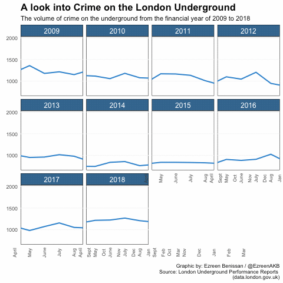

Crime on London Underground
By Ezreen Benissan
Each year, millions of people travel on a Transport for London (TfL) service. For many, it is a quick and easy way of navigating around the city - whether you are jumping on the Tube to work or grabbing the bus to your local supermarket. Londoners are reliant on TfL and it’s services to support their metropolitan lifestyles. TfL services provide efficient links in and around London, but the increasing crime levels on public transport raise questions about customers' safety.
With the number of people opting to use TfL networks increasing each year, and many people returning to work as lockdown restrictions begin to ease in England, I investigated how safe the London Underground really is.
Popular London Stations
According to data obtained from TfL, the stations with the most entry figures every year include Kings Cross St. Pancras, Victoria, London Bridge, Oxford Circus and Waterloo. Data from 2010 to 2017 shows the stations growing in popularity year on year. In 2012, TfL introduced an important and economical change to their services: contactless payments were permitted on networks. Transport use was no longer restricted to people with a valid Oyster card, but instead encouraged a larger number of people with contactless cards to use TfL services. This was not only the year of contactless payments, it was the year London hosted the 2012 Olympic Games. All eyes were on London, many sport-enthusiasts travelled into the capital to support and watch the games. Out of the 270 London Tube stations, the graph below highlights the vast number of people who rely on these stations to get around on a weekly basis.
Many of the stations displayed on the graph have good transport links, efficiently connecting London to other cities and towns around the country. As the city grows in popularity, locations such as London Bridge and Kings Cross St. Pancras have also invested in the local area and are now home to many businesses. Other stations are close to popular tourist spots such as Oxford Circus and Waterloo. TfL's increased attraction has also seized the attention of lawbreaking individuals, highlighting a rise in criminal activity at these popular stations.
Based on the weekday entry figures, these are the top five most frequented stations in London. Choose a station to view the specific criminal offences that have taken place.
Each London Tube station shown in the graphs above demonstrates a worryingly high level of violence and property theft. These two offences are closely followed by a high number of public order offences. The station with the most crime overall is Kings Cross St. Pancras, with a total number of offences reaching 185 over the 11-month period.
The Rising Levels of Criminal Activity on the Tube
TfL have worked closely with the British Transport Police (BTP) to produce data on the volume of criminal activity taking place on London Underground, with data on criminal activity going back as far as 2009. Since 2015/16, crime on London Underground has steeply increased year on year. Recent criminal activity includes the death of Tashan Daniel, who was stabbed to death in an unprovoked attack on a London Tube in 2019. Late last year the National Union of Rail, Maritime and Transport (RMT), expressed serious concerns about the growing crime levels on London Underground services.
It is important to note that the data for London Underground is combined with London Dockland Rail networks.
Mike Cash, the General Secretary at RMT, said: "official figures show that sexual assaults on London Underground have risen by more than 40% in the past four years are a truly shocking indictment of our crime-ridden transport system." The TfL website states that 90 per cent of sexual assaults go unreported, and urge people to report any crime that they experience or witness on London Underground.
The graph below compares the number of reported crimes from the first quarter of the financial year in 2017/18 to that of 2018/19. Although a few offences have decreased from the previous year, there are a number of crimes that have sharply increased, including violence against a person and theft of passenger property.
The data can be found here
London Underground vs Other TfL Services
Although crime rates are increasing on London Underground, it is important to look at how it compares with other TfL services. Investigation into the volume of crime on all TfL services has shown that London Underground is not usually the service with the highest volume of crime each year. The data shows that, until 2018/19, TfL Bus services had consistently more crime levels. This is closely followed by the London Underground and Overground services.
As the crime rate on TfL services have fluctuated over the past decade, 2018/19 has the highest volume of crime on London Underground compared to the other services. The graph also shows that 2018/19 was the highest year on record for reported criminal offences on London Underground.
The rising criminal activity taking place on the London Underground is concerning. Presently, COVID-19 has deterred criminals and put a halt on criminal activity on the Tube. However, as the UK government takes steps towards a new normality, action is needed to ensure crime levels on all TfL services remain low - for both the passengers and TfL staff members.
London Tube Map
Here is a map of all London Underground Tube stations. Click on the station icon to find out which Tube line runs to that station.
The data for this map can be found here